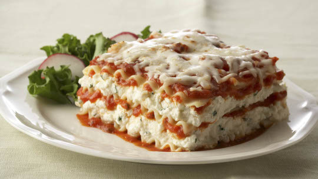

Lasagna w/ Crème Fraîche

Quick and Fast Lasagna Recipe
Ingredients
- ½ pound ground pork
- ½ pound lean ground beef
- ½ cup minced onion
- 1 (28 ounce) can crushed tomatoes
- 1 (8 ounce) can tomato sauce
- 1 (16 ounce) package lasagna noodles
- 1 clove garlic, crushed
- 1 (16 ounce) package shredded mozzarella cheese
- Crème fraîche for garnishing
Steps
- Combine pork and ground beef in a large, deep skillet over medium-high heat; cook and stir until browned and crumbly, 5 to 7 minutes. Add onion and cook until translucent, about 5 minutes.
- Stir in crushed tomatoes, tomato sauce, 1 tablespoon fresh parsley, garlic, basil, salt, oregano, and sugar. Reduce heat to medium-low and simmer, stirring occasionally, for 30 minutes.
- While the sauce is simmering, bring a large pot of lightly salted water to a boil. Cook lasagna noodles in the boiling water, stirring occasionally, until tender yet firm to the bite, 8 to 10 minutes. Drain and set aside.
- While the noodles are cooking, preheat the oven to 375 degrees F (190 degrees C).
- And we're gonna top that with a little crème fraîche
This recipe is intended to be fast and easy!